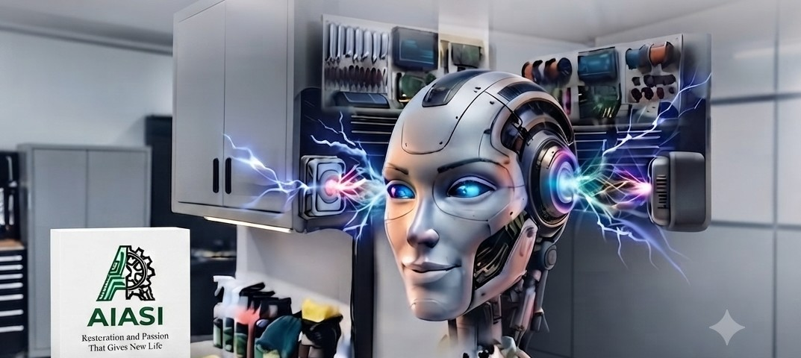

Naprawa elektronarzędzi, maszyn i urządzeń
Kolonia Łomnicka
Zajmujemy się serwisem i naprawą elektronarzędzi oraz sprzętu domowego, warsztatowego i przemysłowego. Naprawiamy urządzenia większości znanych i innych producentów – od przydomowych wkrętarek po ciężki sprzęt do zadań specjalnych.
Wiemy, jak uciążliwa jest awaria narzędzi w trakcie pracy. Dlatego do każdego zlecenia podchodzimy indywidualnie, z dużą dbałością o precyzję i szczegóły. Nie robimy nic "na oko" – zależy nam na tym, aby naprawiony sprzęt służył Ci bezawaryjnie przez długi czas.
Współpraca krok po kroku – diagnoza – wycena – Twoja akceptacja kosztów – naprawa i testy.
W trakcie naprawy jesteśmy z Tobą pod telefonem. Informujemy na bieżąco o przebiegu prac, naszych spostrzeżeniach czy ewentualnych dodatkowych kwestiach.
Jeśli mamy jakieś zalecenia co do dalszej eksploatacji sprzętu – chętnie się nimi dzielimy.
Chcemy, abyś po odebraniu narzędzi wrócił do pracy z poczuciem dobrze wydanych pieniędzy i pewnością, że Twój sprzęt Cię nie zawiedzie.
Strona w budowie
Zapraszamy!
Adres: Kolonia Łomnicka, 46-300 Olesno
Telefon: [695 615 124]
Email: [stew3552@gmail.com]